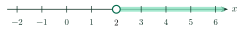

Linear Inequalities in One VariableBất phương trình bậc nhất một ẩn
Grade 9 · Topic: Linear Equations and Linear Inequalities in One VariableLớp 9 · Chủ đề: Phương trình và bất phương trình bậc nhất một ẩn
1Lesson IntroductionGiới thiệu bài học
Learning goalsMục tiêu bài học
By the end of this lesson you can:
Sau bài học này, em có thể:
recognize a linear inequality in one variable and check whether a number is a solution;
nhận biết bất phương trình bậc nhất một ẩn và kiểm tra một số có là nghiệm của bất phương trình hay không;
solve linear inequalities by moving terms and multiplying (or dividing) both sides;
giải bất phương trình bậc nhất một ẩn bằng quy tắc chuyển vế và quy tắc nhân (chia) hai vế;
show the solutions on a number line;
biểu diễn tập nghiệm trên trục số;
solve simple real-world problems with inequalities.
giải được một số bài toán thực tế dẫn đến bất phương trình.
2Mathematical VocabularyTừ vựng Toán học
linear inequality in one variable – \(ax+b\lt 0\) (or \(\gt,\le,\ge\)) with \(a\ne0\).
Bất phương trình bậc nhất một ẩn – bất phương trình dạng \(ax+b\lt 0\) (hoặc \(\gt,\le,\ge\)) với \(a\ne0\).
solution – a value of \(x\) that makes the inequality true.
Nghiệm của bất phương trình – giá trị của \(x\) làm bất phương trình trở thành bất đẳng thức đúng.
solve an inequality – find all its solutions.
Giải bất phương trình – tìm tất cả các nghiệm của nó.
move a term – move it to the other side and change its sign.
Chuyển vế – chuyển một hạng tử sang vế kia và đổi dấu hạng tử đó.
number line – a line on which the solutions are shaded.
Trục số – đường thẳng dùng để biểu diễn tập nghiệm.
3Useful English PhrasesCụm từ tiếng Anh thường gặp
Identify the linear inequality in one variable.
Chỉ ra bất phương trình bậc nhất một ẩn.
The statement is true, so \(x=0\) is a solution.
Khẳng định đúng nên \(x=0\) là một nghiệm.
Solve the following inequalities.
Giải các bất phương trình sau.
Divide both sides by \(-2\) and reverse the inequality sign.
Chia hai vế cho \(-2\) và đổi chiều bất phương trình.
The solutions are all real numbers \(x\) satisfying \(x\gt2\).
Nghiệm của bất phương trình là mọi số thực \(x\) thỏa mãn \(x\gt2\).
4Prerequisite ReviewÔn tập kiến thức nền
Lesson 5. Adding the same number keeps the direction; multiplying by a negative number reverses it.
Bài 5. Cộng cùng một số vào hai vế: giữ chiều; nhân hai vế với số âm: đổi chiều.
Equations. Solving \(ax+b=0\) uses the same moves: \(3x-6=0\Leftrightarrow 3x=6\Leftrightarrow x=2\).
Phương trình. Giải \(ax+b=0\) cũng dùng các bước tương tự: \(3x-6=0\Leftrightarrow 3x=6\Leftrightarrow x=2\).
5TheoryLý thuyết
5.1 Linear inequalities in one variableBất phương trình bậc nhất một ẩn
DefinitionĐịnh nghĩa
A linear inequality in one variable \(x\) has the form \(ax+b\lt0\), \(ax+b\gt0\), \(ax+b\le0\) or \(ax+b\ge0\), where \(a, b\) are given numbers and \(a\ne0\).
Bất phương trình bậc nhất một ẩn \(x\) là bất phương trình dạng \(ax+b\lt0\) (hoặc \(ax+b\gt0\), \(ax+b\le0\), \(ax+b\ge0\)), trong đó \(a, b\) là hai số đã cho, \(a\ne0\).
A number \(x_0\) is a solution if replacing \(x\) by \(x_0\) gives a true inequality. Example: \(x=0\) is a solution of \(3x-6\lt0\) because \(-6\lt0\).
Số \(x_0\) là nghiệm của bất phương trình nếu thay \(x=x_0\) ta được một bất đẳng thức đúng. Ví dụ: \(x=0\) là nghiệm của \(3x-6\lt0\) vì \(-6\lt0\).
5.2 How to solveCách giải
Two rulesHai quy tắc
Moving a term: move a term to the other side and change its sign. The direction does not change.
Quy tắc chuyển vế: chuyển một hạng tử sang vế kia và đổi dấu hạng tử đó; bất phương trình giữ nguyên chiều.
Multiplying (dividing): multiply or divide both sides by the same number \(c\ne0\): keep the direction if \(c\gt0\), reverse it if \(c\lt0\).
Quy tắc nhân (chia): nhân hoặc chia hai vế cho cùng một số \(c\ne0\): giữ nguyên chiều nếu \(c\gt0\), đổi chiều nếu \(c\lt0\).
So \(ax+b\gt0\Leftrightarrow ax\gt-b\Leftrightarrow x\gt-\dfrac{b}{a}\) if \(a\gt0\), and \(x\lt-\dfrac{b}{a}\) if \(a\lt0\).
Như vậy \(ax+b\gt0\Leftrightarrow ax\gt-b\Leftrightarrow x\gt-\dfrac{b}{a}\) nếu \(a\gt0\); \(x\lt-\dfrac{b}{a}\) nếu \(a\lt0\).
5.3 Showing solutions on a number lineBiểu diễn tập nghiệm trên trục số
Shade the part of the number line that contains the solutions. A filled dot means the endpoint is a solution (\(\le,\ \ge\)); an open dot means it is not (\(\lt,\ \gt\)).
Tô phần trục số chứa các nghiệm. Chấm đặc nghĩa là đầu mút là nghiệm (dấu \(\le,\ \ge\)); chấm rỗng nghĩa là đầu mút không là nghiệm (dấu \(\lt,\ \gt\)).

6Worked ExamplesVí dụ có lời giải
ExampleVí dụ 1RememberingBiết – Recognize and checkNhận biết và kiểm tra nghiệm
a) Which are linear inequalities in one variable: \(3x+10\ge0\); \(0x-4\lt0\); \(x^2-1\le0\); \(\dfrac{x}{3}+2\gt0\)?
b) Is \(x=0\) a solution of \(3x-6\lt0\)?
a) Bất phương trình nào là bất phương trình bậc nhất một ẩn: \(3x+10\ge0\); \(0x-4\lt0\); \(x^2-1\le0\); \(\dfrac{x}{3}+2\gt0\)?
b) \(x=0\) có là nghiệm của \(3x-6\lt0\) không?
Analysis: Check the form \(ax+b\) with \(a\ne0\); then substitute.
Phân tích: Kiểm tra dạng \(ax+b\) với \(a\ne0\); sau đó thay số.
a) \(3x+10\ge0\) (\(a=3\)) and \(\dfrac{x}{3}+2\gt0\) (\(a=\dfrac13\)) are. \(0x-4\lt0\) has \(a=0\); \(x^2-1\le0\) contains \(x^2\).
a) \(3x+10\ge0\) (\(a=3\)) và \(\dfrac{x}{3}+2\gt0\) (\(a=\dfrac13\)) là bất phương trình bậc nhất một ẩn. \(0x-4\lt0\) có \(a=0\); \(x^2-1\le0\) chứa \(x^2\).
b) \(3\cdot0-6=-6\lt0\) is true, so \(x=0\) is a solution.
b) \(3\cdot0-6=-6\lt0\) đúng nên \(x=0\) là một nghiệm.
a) \(3x+10\ge0\) and \(\dfrac{x}{3}+2\gt0\).
b) Yes.
a) \(3x+10\ge0\) và \(\dfrac{x}{3}+2\gt0\).
b) Có.
ExampleVí dụ 2UnderstandingHiểu – A negative coefficientHệ số âm
Solve \(-2x+10\ge0\) and show the solutions on a number line.
Giải bất phương trình \(-2x+10\ge0\) và biểu diễn tập nghiệm trên trục số.
Analysis: After moving 10, divide by \(-2\): reverse the sign.
Phân tích: Sau khi chuyển vế, chia cho \(-2\) thì phải đổi chiều.
\(-2x\ge-10\).
\(-2x\ge-10\).
Divide by \(-2\lt0\): \(x\le5\).
Chia hai vế cho \(-2\lt0\): \(x\le5\).
\(x\le5\): filled dot at 5.\(x\le5\): chấm đặc tại 5.
\(x\le5\).
Nghiệm của bất phương trình là \(x\le5\).
ExampleVí dụ 3UnderstandingHiểu – Variables on both sidesẨn ở hai vế
Solve \(5x-2\gt -3x+14\).
Giải bất phương trình \(5x-2\gt -3x+14\).
Analysis: Move the \(x\)-terms to the left and the numbers to the right.
Phân tích: Chuyển các hạng tử chứa \(x\) sang vế trái, các số sang vế phải.
\(5x+3x\gt 14+2\Leftrightarrow 8x\gt16\Leftrightarrow x\gt2\).
\(5x+3x\gt 14+2\Leftrightarrow 8x\gt16\Leftrightarrow x\gt2\).
\(x\gt2\): open dot at 2.\(x\gt2\): chấm rỗng tại 2.
\(x\gt2\).
Nghiệm của bất phương trình là \(x\gt2\).
ExampleVí dụ 4Basic applicationVận dụng thấp – Expand firstKhai triển rồi giải
Solve \((x+1)(2x-1)\le 2x^2-3x+7\).
Giải bất phương trình \((x+1)(2x-1)\le 2x^2-3x+7\).
Analysis: Expand the left-hand side; the \(2x^2\) terms cancel.
Phân tích: Khai triển vế trái; các hạng tử \(2x^2\) triệt tiêu.
\((x+1)(2x-1)=2x^2+x-1\).
\((x+1)(2x-1)=2x^2+x-1\).
\(2x^2+x-1\le 2x^2-3x+7\Leftrightarrow 4x\le 8\Leftrightarrow x\le2\).
\(2x^2+x-1\le 2x^2-3x+7\Leftrightarrow 4x\le 8\Leftrightarrow x\le2\).
\(x\le2\).
Nghiệm của bất phương trình là \(x\le2\).
ExampleVí dụ 5ApplicationVận dụng – Shopping with a budgetMua sắm với số tiền có hạn
Lan has 100 thousand dong. She buys a diary for 28 thousand dong and 3 pens of the same price \(x\) (thousand dong). Write an inequality and find the highest possible price of a pen.
Lan có 100 nghìn đồng. Lan mua một quyển sổ giá 28 nghìn đồng và 3 cây bút cùng giá \(x\) (nghìn đồng). Viết bất phương trình và tìm giá cao nhất có thể của một cây bút.
Analysis: Total cost cannot exceed the money she has.
Phân tích: Tổng số tiền mua không vượt quá số tiền Lan có.
Total cost: \(3x+28\). Inequality: \(3x+28\le100\).
Tổng số tiền: \(3x+28\). Bất phương trình: \(3x+28\le100\).
\(3x\le72\Leftrightarrow x\le24\).
\(3x\le72\Leftrightarrow x\le24\).
A pen costs at most 24 thousand dong.
Mỗi cây bút có giá nhiều nhất là 24 nghìn đồng.
7PracticeBài tập luyện tập
A. Multiple ChoiceA. Trắc nghiệm nhiều lựa chọn
Identify the linear inequality in \(x\).
Chỉ ra bất phương trình bậc nhất ẩn \(x\).
Answer: c. It has the form \(ax+b\lt 0\) (or \(\gt, \le, \ge\)) with \(a\ne0\).
Đáp án c. Bất phương trình có dạng \(ax+b\lt 0\) (hoặc \(\gt, \le, \ge\)) với \(a\ne0\).
Solve the inequality \(-4x+25\gt 6\).
Giải bất phương trình \(-4x+25\gt 6\).
Answer: a. \(-4x\gt -19\) (divide by \(-4\) and reverse the sign), so \(x\lt \dfrac{19}{4}\).
Đáp án a. \(-4x\gt -19\) (chia cho \(-4\) và đổi chiều), suy ra \(x\lt \dfrac{19}{4}\).
Which value of \(x\) is a solution of \(8x+32\le -9\)?
Giá trị nào của \(x\) là nghiệm của bất phương trình \(8x+32\le -9\)?
Answer: d. Substitute: \(8\cdot(-8)+32=-32\le -9\) is true.
Đáp án d. Thay vào: \(8\cdot(-8)+32=-32\le -9\) đúng.
B. True or FalseB. Đúng hoặc sai
\(x=-3\) is a solution of the inequality \(8x+32\ge -7\).
\(x=-3\) là một nghiệm của bất phương trình \(8x+32\ge -7\).
True. \(8\cdot(-3)+32=8\); the statement \(8\ge -7\) is true.
Đúng. \(8\cdot(-3)+32=8\); mệnh đề \(8\ge -7\) đúng.
The solution of \(-4x-20\le 0\) is \(x\ge -5\).
Nghiệm của bất phương trình \(-4x-20\le 0\) là \(x\ge -5\).
True. Divide by \(-4\lt 0\) and reverse the sign: \(x\ge -5\).
Đúng. Chia hai vế cho \(-4\lt 0\) và đổi chiều: \(x\ge -5\).
C. Short AnswerC. Trả lời ngắn
Find the largest integer \(x\) that satisfies \(8x+4\lt 3x+1\).
Tìm số nguyên \(x\) lớn nhất thỏa mãn \(8x+4\lt 3x+1\).
Enter a number.
Nhập một số.
Answer: -1. The solution is \(x\lt -\dfrac{3}{5}\); the largest integer is -1.
Đáp số: -1. Nghiệm của bất phương trình là \(x\lt -\dfrac{3}{5}\); số nguyên lớn nhất là -1.
Lan has 100 thousand dong. She buys a book for 30 thousand dong and 4 notebooks of the same price \(x\) (thousand dong, a whole number). What is the highest possible price of one notebook?
Bạn Lan có 100 nghìn đồng. Bạn mua một quyển sách giá 30 nghìn đồng và 4 quyển vở cùng giá \(x\) (nghìn đồng, là số nguyên). Giá mỗi quyển vở cao nhất có thể là bao nhiêu?
Enter a whole number.
Nhập một số nguyên.
Answer: 17. \(4x+30\le 100\Rightarrow x\le \dfrac{35}{2}\), so the largest whole number is 17.
Đáp số: 17. \(4x+30\le 100\Rightarrow x\le \dfrac{35}{2}\), nên số nguyên lớn nhất là 17.
D1. Self-practice – RememberingD1. Tự luyện – Mức Biết
When we divide both sides of an inequality by \(-10\), we must…
Khi chia hai vế của một bất phương trình cho \(-10\), ta phải…
Answer: a. Multiplying or dividing by a negative number reverses the sign.
Đáp án a. Nhân hoặc chia hai vế cho số âm thì phải đổi chiều.
In the inequality \(9x-7\lt 0\), what are \(a\) and \(b\)?
Trong bất phương trình \(9x-7\lt 0\), hệ số \(a\) và \(b\) là bao nhiêu?
Answer: b. Compare with \(ax+b\).
Đáp án b. So sánh với dạng \(ax+b\).
Which number satisfies \(-3x+15\lt 5\)?
Số nào thỏa mãn bất phương trình \(-3x+15\lt 5\)?
Answer: c. Substitute: \(-3\cdot(9)+15=-12\lt 5\) is true.
Đáp án c. Thay vào: \(-3\cdot(9)+15=-12\lt 5\) đúng.
D2. Self-practice – UnderstandingD2. Tự luyện – Mức Hiểu
Solve \(-6x-6\le 0\).
Giải bất phương trình \(-6x-6\le 0\).
Answer: d. \(-6x\le 6\); divide by \(-6\lt0\) and reverse: \(x\ge -1\).
Đáp án d. \(-6x\le 6\); chia cho \(-6\lt0\) và đổi chiều: \(x\ge -1\).
On a number line, the solutions \(x\le 4\) are shown. What do we draw at the point \(4\)?
Biểu diễn nghiệm \(x\le 4\) trên trục số. Tại điểm \(4\) ta vẽ gì?
Answer: a. The point belongs to the solutions (\(\le,\ge\)): filled dot.
Đáp án a. Điểm đó là nghiệm (dấu \(\le,\ge\)): chấm đặc.
Solve \(\dfrac{x}{5}+6\le 2\).
Giải bất phương trình \(\dfrac{x}{5}+6\le 2\).
Answer: a. \(\dfrac{x}{5}\le -4\); multiply by \(5\gt0\): \(x\le -20\).
Đáp án a. \(\dfrac{x}{5}\le -4\); nhân hai vế với \(5\gt0\): \(x\le -20\).
D3. Self-practice – Basic applicationD3. Tự luyện – Mức Vận dụng thấp
Solve \(-3x-15\lt 4x+8\).
Giải bất phương trình \(-3x-15\lt 4x+8\).
Answer: a. Move terms: \(-7x\lt 23\Rightarrow x\gt -\dfrac{23}{7}\).
Đáp án a. Chuyển vế: \(-7x\lt 23\Rightarrow x\gt -\dfrac{23}{7}\).
Solve \((x+1)(2x+1)\gt 2x^2-x-2\).
Giải bất phương trình \((x+1)(2x+1)\gt 2x^2-x-2\).
Answer: a. Expand: \(2x^2+3x+1\); the \(2x^2\) terms cancel: \(4x\gt -3\Rightarrow x\gt -\dfrac{3}{4}\).
Đáp án a. Khai triển: \(2x^2+3x+1\); hai hạng tử \(2x^2\) triệt tiêu: \(4x\gt -3\Rightarrow x\gt -\dfrac{3}{4}\).
What is the smallest integer that satisfies \(-9x+55\le 4\)?
Số nguyên nhỏ nhất thỏa mãn \(-9x+55\le 4\) là số nào?
Answer: b. Solution: \(x\ge \dfrac{17}{3}\); the smallest integer is 6.
Đáp án b. Nghiệm: \(x\ge \dfrac{17}{3}\); số nguyên nhỏ nhất là 6.
D4. Self-practice – Advanced applicationD4. Tự luyện – Mức Vận dụng
A class has 300 thousand dong. They pay 20 thousand dong for transport and buy drinks at 15 thousand dong each. What is the greatest number of drinks they can buy?
Một lớp có 300 nghìn đồng. Lớp trả 20 nghìn đồng tiền xe và mua nước uống, mỗi chai 15 nghìn đồng. Lớp mua được nhiều nhất bao nhiêu chai nước?
Answer: a. \(15x+20\le 300\Rightarrow x\le \dfrac{56}{3}\); \(x\) is a whole number, so \(x=18\).
Đáp án a. \(15x+20\le 300\Rightarrow x\le \dfrac{56}{3}\); \(x\) là số tự nhiên nên \(x=18\).
In triangle \(DEF\), \(DF=4x-1\) and \(DE=x+11\) (cm), and \(DF\) is longer than \(DE\). Which condition on \(x\) is correct?
Tam giác \(DEF\) có \(DF=4x-1\) và \(DE=x+11\) (cm), trong đó \(DF\) dài hơn \(DE\). Điều kiện nào của \(x\) đúng?
Answer: c. \(4x-1\gt x+11\Rightarrow 3x\gt 12\Rightarrow x\gt 4\).
Đáp án c. \(4x-1\gt x+11\Rightarrow 3x\gt 12\Rightarrow x\gt 4\).
Phone plan A costs 70 thousand dong per month plus 500 dong per minute. Plan B costs 10 thousand dong per month plus 900 dong per minute. From how many whole minutes per month is plan A cheaper?
Gói cước A: 70 nghìn đồng mỗi tháng và 500 đồng mỗi phút gọi. Gói B: 10 nghìn đồng mỗi tháng và 900 đồng mỗi phút gọi. Gọi từ bao nhiêu phút (số nguyên) trở lên trong tháng thì gói A rẻ hơn?
Answer: c. \(70000+500t\lt 10000+900t\Rightarrow t\gt 150\), so from 151 minutes.
Đáp án c. \(70000+500t\lt 10000+900t\Rightarrow t\gt 150\), nên từ 151 phút trở lên.
A. Multiple ChoiceA. Trắc nghiệm nhiều lựa chọn
Only one of these is a linear inequality in one variable. Which one?
Chỉ có một bất phương trình bậc nhất một ẩn. Đó là bất phương trình nào?
Answer: c. It has the form \(ax+b\lt 0\) (or \(\gt, \le, \ge\)) with \(a\ne0\).
Đáp án c. Bất phương trình có dạng \(ax+b\lt 0\) (hoặc \(\gt, \le, \ge\)) với \(a\ne0\).
Solve the inequality \(-5x+35\lt -8\).
Giải bất phương trình \(-5x+35\lt -8\).
Answer: c. \(-5x\lt -43\) (divide by \(-5\) and reverse the sign), so \(x\gt \dfrac{43}{5}\).
Đáp án c. \(-5x\lt -43\) (chia cho \(-5\) và đổi chiều), suy ra \(x\gt \dfrac{43}{5}\).
Which value of \(x\) is a solution of \(7x-20\ge 3\)?
Giá trị nào của \(x\) là nghiệm của bất phương trình \(7x-20\ge 3\)?
Answer: d. Substitute: \(7\cdot(4)-20=8\ge 3\) is true.
Đáp án d. Thay vào: \(7\cdot(4)-20=8\ge 3\) đúng.
B. True or FalseB. Đúng hoặc sai
\(x=1\) is a solution of the inequality \(7x-21\gt 1\).
\(x=1\) là một nghiệm của bất phương trình \(7x-21\gt 1\).
False. \(7\cdot(1)-21=-14\); the statement \(-14\gt 1\) is false.
Sai. \(7\cdot(1)-21=-14\); mệnh đề \(-14\gt 1\) sai.
The solution of \(-2x+3\ge 0\) is \(x\ge \dfrac{3}{2}\).
Nghiệm của bất phương trình \(-2x+3\ge 0\) là \(x\ge \dfrac{3}{2}\).
False. Divide by \(-2\lt 0\) and reverse the sign: \(x\le \dfrac{3}{2}\).
Sai. Chia hai vế cho \(-2\lt 0\) và đổi chiều: \(x\le \dfrac{3}{2}\).
C. Short AnswerC. Trả lời ngắn
Find the largest integer \(x\) that satisfies \(4x-1\le -4x+2\).
Tìm số nguyên \(x\) lớn nhất thỏa mãn \(4x-1\le -4x+2\).
Enter a number.
Nhập một số.
Answer: 0. The solution is \(x\le \dfrac{3}{8}\); the largest integer is 0.
Đáp số: 0. Nghiệm của bất phương trình là \(x\le \dfrac{3}{8}\); số nguyên lớn nhất là 0.
An has 200 thousand dong. He buys a book for 30 thousand dong and 6 notebooks of the same price \(x\) (thousand dong, a whole number). What is the highest possible price of one notebook?
Bạn An có 200 nghìn đồng. Bạn mua một quyển sách giá 30 nghìn đồng và 6 quyển vở cùng giá \(x\) (nghìn đồng, là số nguyên). Giá mỗi quyển vở cao nhất có thể là bao nhiêu?
Enter a whole number.
Nhập một số nguyên.
Answer: 28. \(6x+30\le 200\Rightarrow x\le \dfrac{85}{3}\), so the largest whole number is 28.
Đáp số: 28. \(6x+30\le 200\Rightarrow x\le \dfrac{85}{3}\), nên số nguyên lớn nhất là 28.
D1. Self-practice – RememberingD1. Tự luyện – Mức Biết
When we divide both sides of an inequality by \(-9\), we must…
Khi chia hai vế của một bất phương trình cho \(-9\), ta phải…
Answer: a. Multiplying or dividing by a negative number reverses the sign.
Đáp án a. Nhân hoặc chia hai vế cho số âm thì phải đổi chiều.
In the inequality \(7x+3\lt 0\), what are \(a\) and \(b\)?
Trong bất phương trình \(7x+3\lt 0\), hệ số \(a\) và \(b\) là bao nhiêu?
Answer: c. Compare with \(ax+b\).
Đáp án c. So sánh với dạng \(ax+b\).
Which number satisfies \(5x+5\lt 4\)?
Số nào thỏa mãn bất phương trình \(5x+5\lt 4\)?
Answer: d. Substitute: \(5\cdot(-3)+5=-10\lt 4\) is true.
Đáp án d. Thay vào: \(5\cdot(-3)+5=-10\lt 4\) đúng.
D2. Self-practice – UnderstandingD2. Tự luyện – Mức Hiểu
Solve \(-5x+35\le 0\).
Giải bất phương trình \(-5x+35\le 0\).
Answer: c. \(-5x\le -35\); divide by \(-5\lt0\) and reverse: \(x\ge 7\).
Đáp án c. \(-5x\le -35\); chia cho \(-5\lt0\) và đổi chiều: \(x\ge 7\).
On a number line, the solutions \(x\lt 8\) are shown. What do we draw at the point \(8\)?
Biểu diễn nghiệm \(x\lt 8\) trên trục số. Tại điểm \(8\) ta vẽ gì?
Answer: b. The point is not a solution (\(\lt,\gt\)): open dot.
Đáp án b. Điểm đó không là nghiệm (dấu \(\lt,\gt\)): chấm rỗng.
Solve \(\dfrac{x}{3}+8\le -8\).
Giải bất phương trình \(\dfrac{x}{3}+8\le -8\).
Answer: d. \(\dfrac{x}{3}\le -16\); multiply by \(3\gt0\): \(x\le -48\).
Đáp án d. \(\dfrac{x}{3}\le -16\); nhân hai vế với \(3\gt0\): \(x\le -48\).
D3. Self-practice – Basic applicationD3. Tự luyện – Mức Vận dụng thấp
Solve \(6x-13\le -4x+8\).
Giải bất phương trình \(6x-13\le -4x+8\).
Answer: d. Move terms: \(10x\le 21\Rightarrow x\le \dfrac{21}{10}\).
Đáp án d. Chuyển vế: \(10x\le 21\Rightarrow x\le \dfrac{21}{10}\).
Solve \((x+3)(2x-6)\ge 2x^2-8x+7\).
Giải bất phương trình \((x+3)(2x-6)\ge 2x^2-8x+7\).
Answer: a. Expand: \(2x^2-18\); the \(2x^2\) terms cancel: \(8x\ge 25\Rightarrow x\ge \dfrac{25}{8}\).
Đáp án a. Khai triển: \(2x^2-18\); hai hạng tử \(2x^2\) triệt tiêu: \(8x\ge 25\Rightarrow x\ge \dfrac{25}{8}\).
What is the smallest integer that satisfies \(-6x+19\le -7\)?
Số nguyên nhỏ nhất thỏa mãn \(-6x+19\le -7\) là số nào?
Answer: b. Solution: \(x\ge \dfrac{13}{3}\); the smallest integer is 5.
Đáp án b. Nghiệm: \(x\ge \dfrac{13}{3}\); số nguyên nhỏ nhất là 5.
D4. Self-practice – Advanced applicationD4. Tự luyện – Mức Vận dụng
A class has 200 thousand dong. They pay 50 thousand dong for transport and buy drinks at 25 thousand dong each. What is the greatest number of drinks they can buy?
Một lớp có 200 nghìn đồng. Lớp trả 50 nghìn đồng tiền xe và mua nước uống, mỗi chai 25 nghìn đồng. Lớp mua được nhiều nhất bao nhiêu chai nước?
Answer: a. \(25x+50\le 200\Rightarrow x\le 6\); \(x\) is a whole number, so \(x=6\).
Đáp án a. \(25x+50\le 200\Rightarrow x\le 6\); \(x\) là số tự nhiên nên \(x=6\).
In triangle \(DEF\), \(DF=4x+2\) and \(DE=3x+9\) (cm), and \(DF\) is longer than \(DE\). Which condition on \(x\) is correct?
Tam giác \(DEF\) có \(DF=4x+2\) và \(DE=3x+9\) (cm), trong đó \(DF\) dài hơn \(DE\). Điều kiện nào của \(x\) đúng?
Answer: c. \(4x+2\gt 3x+9\Rightarrow x\gt 7\Rightarrow x\gt 7\).
Đáp án c. \(4x+2\gt 3x+9\Rightarrow x\gt 7\Rightarrow x\gt 7\).
Phone plan A costs 70 thousand dong per month plus 300 dong per minute. Plan B costs 10 thousand dong per month plus 800 dong per minute. From how many whole minutes per month is plan A cheaper?
Gói cước A: 70 nghìn đồng mỗi tháng và 300 đồng mỗi phút gọi. Gói B: 10 nghìn đồng mỗi tháng và 800 đồng mỗi phút gọi. Gọi từ bao nhiêu phút (số nguyên) trở lên trong tháng thì gói A rẻ hơn?
Answer: a. \(70000+300t\lt 10000+800t\Rightarrow t\gt 120\), so from 121 minutes.
Đáp án a. \(70000+300t\lt 10000+800t\Rightarrow t\gt 120\), nên từ 121 phút trở lên.
A. Multiple ChoiceA. Trắc nghiệm nhiều lựa chọn
Choose the linear inequality in one variable.
Chọn bất phương trình bậc nhất một ẩn.
Answer: b. It has the form \(ax+b\lt 0\) (or \(\gt, \le, \ge\)) with \(a\ne0\).
Đáp án b. Bất phương trình có dạng \(ax+b\lt 0\) (hoặc \(\gt, \le, \ge\)) với \(a\ne0\).
Solve the inequality \(-5x-35\ge -7\).
Giải bất phương trình \(-5x-35\ge -7\).
Answer: c. \(-5x\ge 28\) (divide by \(-5\) and reverse the sign), so \(x\le -\dfrac{28}{5}\).
Đáp án c. \(-5x\ge 28\) (chia cho \(-5\) và đổi chiều), suy ra \(x\le -\dfrac{28}{5}\).
Which value of \(x\) is a solution of \(-2x+9\le 6\)?
Giá trị nào của \(x\) là nghiệm của bất phương trình \(-2x+9\le 6\)?
Answer: a. Substitute: \(-2\cdot(12)+9=-15\le 6\) is true.
Đáp án a. Thay vào: \(-2\cdot(12)+9=-15\le 6\) đúng.
B. True or FalseB. Đúng hoặc sai
\(x=-8\) is a solution of the inequality \(7x-20\lt -6\).
\(x=-8\) là một nghiệm của bất phương trình \(7x-20\lt -6\).
True. \(7\cdot(-8)-20=-76\); the statement \(-76\lt -6\) is true.
Đúng. \(7\cdot(-8)-20=-76\); mệnh đề \(-76\lt -6\) đúng.
The solution of \(-6x+3\lt 0\) is \(x\gt \dfrac{1}{2}\).
Nghiệm của bất phương trình \(-6x+3\lt 0\) là \(x\gt \dfrac{1}{2}\).
True. Divide by \(-6\lt 0\) and reverse the sign: \(x\gt \dfrac{1}{2}\).
Đúng. Chia hai vế cho \(-6\lt 0\) và đổi chiều: \(x\gt \dfrac{1}{2}\).
C. Short AnswerC. Trả lời ngắn
Find the largest integer \(x\) that satisfies \(8x-8\le 2x+5\).
Tìm số nguyên \(x\) lớn nhất thỏa mãn \(8x-8\le 2x+5\).
Enter a number.
Nhập một số.
Answer: 2. The solution is \(x\le \dfrac{13}{6}\); the largest integer is 2.
Đáp số: 2. Nghiệm của bất phương trình là \(x\le \dfrac{13}{6}\); số nguyên lớn nhất là 2.
Nam has 120 thousand dong. He buys a book for 30 thousand dong and 6 notebooks of the same price \(x\) (thousand dong, a whole number). What is the highest possible price of one notebook?
Bạn Nam có 120 nghìn đồng. Bạn mua một quyển sách giá 30 nghìn đồng và 6 quyển vở cùng giá \(x\) (nghìn đồng, là số nguyên). Giá mỗi quyển vở cao nhất có thể là bao nhiêu?
Enter a whole number.
Nhập một số nguyên.
Answer: 15. \(6x+30\le 120\Rightarrow x\le 15\), so the largest whole number is 15.
Đáp số: 15. \(6x+30\le 120\Rightarrow x\le 15\), nên số nguyên lớn nhất là 15.
D1. Self-practice – RememberingD1. Tự luyện – Mức Biết
When we divide both sides of an inequality by \(-11\), we must…
Khi chia hai vế của một bất phương trình cho \(-11\), ta phải…
Answer: c. Multiplying or dividing by a negative number reverses the sign.
Đáp án c. Nhân hoặc chia hai vế cho số âm thì phải đổi chiều.
In the inequality \(-5x+6\lt 0\), what are \(a\) and \(b\)?
Trong bất phương trình \(-5x+6\lt 0\), hệ số \(a\) và \(b\) là bao nhiêu?
Answer: c. Compare with \(ax+b\).
Đáp án c. So sánh với dạng \(ax+b\).
Which number satisfies \(-5x+10\ge 2\)?
Số nào thỏa mãn bất phương trình \(-5x+10\ge 2\)?
Answer: c. Substitute: \(-5\cdot(-11)+10=65\ge 2\) is true.
Đáp án c. Thay vào: \(-5\cdot(-11)+10=65\ge 2\) đúng.
D2. Self-practice – UnderstandingD2. Tự luyện – Mức Hiểu
Solve \(-9x+63\lt 0\).
Giải bất phương trình \(-9x+63\lt 0\).
Answer: d. \(-9x\lt -63\); divide by \(-9\lt0\) and reverse: \(x\gt 7\).
Đáp án d. \(-9x\lt -63\); chia cho \(-9\lt0\) và đổi chiều: \(x\gt 7\).
On a number line, the solutions \(x\gt 6\) are shown. What do we draw at the point \(6\)?
Biểu diễn nghiệm \(x\gt 6\) trên trục số. Tại điểm \(6\) ta vẽ gì?
Answer: d. The point is not a solution (\(\lt,\gt\)): open dot.
Đáp án d. Điểm đó không là nghiệm (dấu \(\lt,\gt\)): chấm rỗng.
Solve \(\dfrac{x}{4}+9\lt -1\).
Giải bất phương trình \(\dfrac{x}{4}+9\lt -1\).
Answer: c. \(\dfrac{x}{4}\lt -10\); multiply by \(4\gt0\): \(x\lt -40\).
Đáp án c. \(\dfrac{x}{4}\lt -10\); nhân hai vế với \(4\gt0\): \(x\lt -40\).
D3. Self-practice – Basic applicationD3. Tự luyện – Mức Vận dụng thấp
Solve \(-7x-1\lt -x+5\).
Giải bất phương trình \(-7x-1\lt -x+5\).
Answer: a. Move terms: \(-6x\lt 6\Rightarrow x\gt -1\).
Đáp án a. Chuyển vế: \(-6x\lt 6\Rightarrow x\gt -1\).
Solve \((x+6)(2x+6)\le 2x^2-4x-6\).
Giải bất phương trình \((x+6)(2x+6)\le 2x^2-4x-6\).
Answer: d. Expand: \(2x^2+18x+36\); the \(2x^2\) terms cancel: \(22x\le -42\Rightarrow x\le -\dfrac{21}{11}\).
Đáp án d. Khai triển: \(2x^2+18x+36\); hai hạng tử \(2x^2\) triệt tiêu: \(22x\le -42\Rightarrow x\le -\dfrac{21}{11}\).
What is the smallest integer that satisfies \(-7x-29\lt 9\)?
Số nguyên nhỏ nhất thỏa mãn \(-7x-29\lt 9\) là số nào?
Answer: d. Solution: \(x\gt -\dfrac{38}{7}\); the smallest integer is -5.
Đáp án d. Nghiệm: \(x\gt -\dfrac{38}{7}\); số nguyên nhỏ nhất là -5.
D4. Self-practice – Advanced applicationD4. Tự luyện – Mức Vận dụng
A class has 300 thousand dong. They pay 40 thousand dong for transport and buy drinks at 20 thousand dong each. What is the greatest number of drinks they can buy?
Một lớp có 300 nghìn đồng. Lớp trả 40 nghìn đồng tiền xe và mua nước uống, mỗi chai 20 nghìn đồng. Lớp mua được nhiều nhất bao nhiêu chai nước?
Answer: c. \(20x+40\le 300\Rightarrow x\le 13\); \(x\) is a whole number, so \(x=13\).
Đáp án c. \(20x+40\le 300\Rightarrow x\le 13\); \(x\) là số tự nhiên nên \(x=13\).
In triangle \(DEF\), \(DF=2x+4\) and \(DE=x+9\) (cm), and \(DF\) is longer than \(DE\). Which condition on \(x\) is correct?
Tam giác \(DEF\) có \(DF=2x+4\) và \(DE=x+9\) (cm), trong đó \(DF\) dài hơn \(DE\). Điều kiện nào của \(x\) đúng?
Answer: d. \(2x+4\gt x+9\Rightarrow x\gt 5\Rightarrow x\gt 5\).
Đáp án d. \(2x+4\gt x+9\Rightarrow x\gt 5\Rightarrow x\gt 5\).
Phone plan A costs 50 thousand dong per month plus 400 dong per minute. Plan B costs 0 thousand dong per month plus 1200 dong per minute. From how many whole minutes per month is plan A cheaper?
Gói cước A: 50 nghìn đồng mỗi tháng và 400 đồng mỗi phút gọi. Gói B: 0 nghìn đồng mỗi tháng và 1200 đồng mỗi phút gọi. Gọi từ bao nhiêu phút (số nguyên) trở lên trong tháng thì gói A rẻ hơn?
Answer: c. \(50000+400t\lt 0+1200t\Rightarrow t\gt \dfrac{125}{2}\), so from 63 minutes.
Đáp án c. \(50000+400t\lt 0+1200t\Rightarrow t\gt \dfrac{125}{2}\), nên từ 63 phút trở lên.
8Common MistakesLỗi thường gặp
Not reversing when dividing by a negative number. \(-2x\ge-10\Rightarrow x\le5\), not \(x\ge5\).
Chia cho số âm mà không đổi chiều. \(-2x\ge-10\Rightarrow x\le5\), không phải \(x\ge5\).
Reversing when moving a term. Moving a term changes its sign, not the direction of the inequality.
Đổi chiều khi chuyển vế. Chuyển vế chỉ đổi dấu hạng tử, không đổi chiều bất phương trình.
Wrong dot on the number line. \(\le,\ \ge\): filled dot; \(\lt,\ \gt\): open dot.
Vẽ sai đầu mút trên trục số. Dấu \(\le,\ \ge\): chấm đặc; dấu \(\lt,\ \gt\): chấm rỗng.
Expanding carelessly. \((x+1)(2x-1)=2x^2+x-1\); check each product.
Khai triển sai. \((x+1)(2x-1)=2x^2+x-1\); hãy kiểm tra từng tích.
Forgetting whole numbers in word problems. If \(x\) counts objects, take the largest whole number that works.
Quên điều kiện số nguyên. Nếu \(x\) là số đồ vật thì chọn số tự nhiên lớn nhất thỏa mãn.
9Lesson SummaryTổng kết
Linear inequality in one variable: \(ax+b\lt0\) (or \(\gt,\le,\ge\)), \(a\ne0\).
Bất phương trình bậc nhất một ẩn: \(ax+b\lt0\) (hoặc \(\gt,\le,\ge\)), \(a\ne0\).
Move terms (change the sign of the term); multiply or divide by a negative number → reverse the inequality.
Chuyển vế (đổi dấu hạng tử); nhân hoặc chia cho số âm → đổi chiều bất phương trình.
Number line: filled dot for \(\le,\ge\), open dot for \(\lt,\gt\).
Trục số: chấm đặc với \(\le,\ge\), chấm rỗng với \(\lt,\gt\).
Key English: linear inequality in one variable, solve an inequality, reverse the sign.
Thuật ngữ cần nhớ (chạm vào để xem tiếng Anh): bất phương trình bậc nhất một ẩn, giải bất phương trình, chuyển vế, trục số.